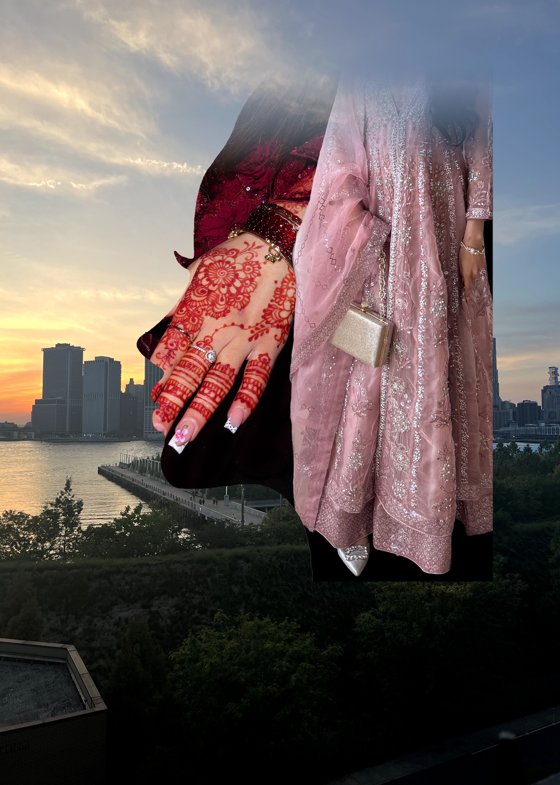

This project is all about juxtaposition—putting two totally different things together to see how they clash or fit. I wanted to show the mix of Pakistani culture and Western city life. By putting the traditional dress and henna-patterned hands inside a silhouette against a sunset skyline, it creates a "mesh" of two worlds. It’s like showing how you can carry your heritage and culture with you, even when you’re in a completely different, modern environment.
To make this happen, I used non-destructive editing. Instead of permanently erasing pixels, I used layer masks to selectively hide or show parts of the dress and hands. This kept all my original photo data safe so I could tweak things as I went. I also used clipping masks to ensure the dress stayed perfectly inside the silhouette without messy edges. This workflow gave me the freedom to fine-tune the blend until the transition between the traditional and the contemporary felt intentional.